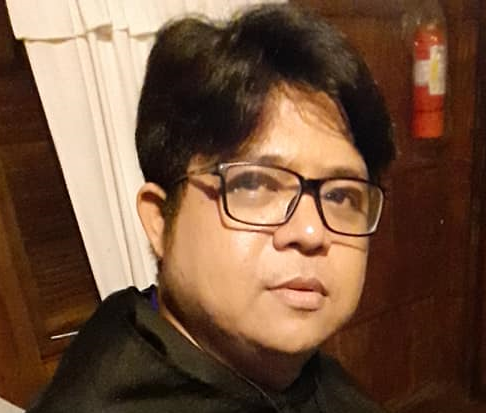

Norman R. Dayto
Full-Stack Web Developer
Contact No.: 0910-254-4155 |
Email Me
|
My Facebook
Educational Attainment
Lucena East I Elementary School, 1992
Rizal Memorial Colleges - Top 2, Math Fair, 1996
St. John Paul II College of Davao - BS Computer Science, Best in Software Design, Conics Calculator - 2004
Computer Handware Servicing (NCII) - 2009
Work Experience
San Miguel Corporation
Systems Custodian, 2005-2007
Tagum Agricultural Dev't. Co., Inc. (TADECO)
HRD Personnel, 2009-Present
Learning and Development (L & D) Interventions / Trainings Attended
Digital Switching Transmission - 1998
ECE Related Seminar, sponsored by University of Southeastern Philippines
Basic Multimedia Production - 1999
Multimedia Production using Flash and other applications, sponsored by University of Mindanao
Seminar on Voice and Data Grade Structured Cabling - 2003
Related to our Cisco curriculum, sponsored by St. John Paul II College of Davao
Program Development and Implementation - 2017
Corporate Social Responsibilities (CSR), sponsored by AOF Foundation
References
Archie Capoy - HRD Superintendent, TADECO Inc.